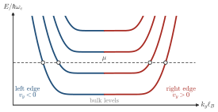
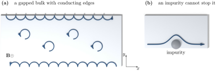

Advanced Quantum Materials 2027 · All lectures · Lecture notes
Session 3. Topological Band Structure Theory
3.6a Landau levels and chiral edge states in the quantum Hall state
The Chern number appears in its simplest form in the quantum Hall state itself, which is a two-dimensional electron gas in a strong perpendicular magnetic field. The resulting band structure is the flat-band type of dispersion from session 2, which is a set of Landau levels without dispersion, and each Landau level has Chern number \(+1\). If we fill the first Landau level, the total Chern number is \(C=1\). If we fill the first two, we get \(C=2\), and so on, so that \(\sigma_{xy} = C\, e^2/h\) goes through successive integer plateaus as the chemical potential goes up through successive Landau levels. This is the integer quantum Hall effect, and in session 4 we will work out its full phenomenology, including the fractional case. In this session we only need to count the Chern numbers.
The chemical potential of a quantum Hall sample is in the gap between the second and the third Landau level. What are \(\sigma_{xy}\) and the number of chiral modes at one edge?
Show the answers
- A. ✗ False
This is false. One mode and \(e^2/h\) belong to the gap above the first Landau level. With two levels filled, the ribbon spectrum has two branches that cross the chemical potential at one edge.
- B. ✗ False
This is false. The modes of one edge all go in the same direction, and the ones that go backwards are on the other edge. Four modes on one edge would give \(\sigma_{xy}=4e^2/h\), and two modes going back and two going forward could be backscattered by an impurity.
- C. ✓ True
This is true. Each filled Landau level has \(C=1\), so two filled levels give \(C=2\). The number of chiral modes at one edge is equal to \(C\), and all of them propagate in the same direction.

A ribbon with the chemical potential between the second and the third Landau level. Each edge has two crossings, marked by the circles, and the slopes at one edge have the same sign.
This raises a puzzle. We have an insulator, with a gap between Landau levels, but \(\sigma_{xy}\) is a conductivity, which means that some electron has to move somewhere. The answer is that any real sample has an edge, and at this edge the bulk gap closes. Gapless edge states appear, and they carry the current that (3.4) predicts. These edge states have another key property, which is that on a given edge the states propagate in only one direction. The top edge of a sample carries current in one direction only, and the bottom edge carries it in the opposite direction only. A mode that propagates in a single direction is called chiral, and chirality is what protects the quantum Hall state against disorder. An electron in a chiral edge mode cannot backscatter, since there is no state that propagates in the opposite direction at the same edge and the same energy. Without a backscattering channel there is no resistance in this channel. Figure 3.1 shows both parts of this picture, which are the closed bulk orbits that carry no current and the skipping orbits that carry all of it, and it also shows what happens when an impurity is put in their way.

We reverse the direction of the magnetic field in a quantum Hall sample. What happens to the edge states?
Show the answers
- A. ✗ False
This is false. The plateau \(|\sigma_{xy}|=e^2/h\) is measured for both signs of the field, and a plateau needs the edge states. Only the sign of the Hall voltage changes.
- B. ✗ False
This is false. The Hall conductivity is odd in \(B\), so \(\sigma_{xy}(-B)=-\sigma_{xy}(B)\). With \(\sigma_{xy}=e^2/h\) the chiral mode must go the other way, otherwise the sign could not change.
- C. ✓ True
This is true. All the arrows of the figure are reversed together. The Chern number of every Landau level changes sign, so the number of edge modes is the same and their direction is the opposite.
Try it. Run the cell for the three values in Bs. At B = 0 the lowest bands disperse over a wide range of energy. At B = 0.04 they are almost flat as a function of the momentum, which is what a Landau level is. The color shows the position across the ribbon.